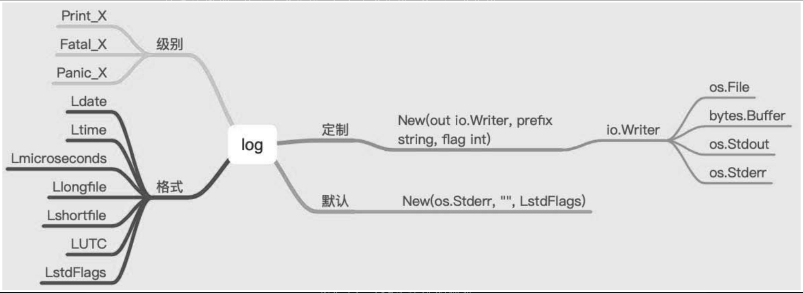

Contents
10.10. log¶
在日常开发中，有效地处理日志信息对应用程序的调试和排错都非常重要。当系统不复杂时，在终端打印出有效的处理信息就能够完成查看等功能。但是如果系统报错，终端打印的信息是不会存储下来的，如果没有日志信息，就会错过一些重要的信息，不利于调试和排错。
日志的级别：Print_X系列、Fatal_X系列、Panic_X系列。
日志的格式：比如文件的名称、具体的报错位置、时间等，方便开发人员调试和排错。日志的输出：比如将日志存储在磁盘上。
10.10.1. 1.默认日志格式¶
func DefaultUsageForLog() {
log.Print("Hello World, Golang")
log.Println("Hello World, Golang")
log.Printf("Hello World, %s", "Golang")
fmt.Println("log Prefix", log.Prefix())
fmt.Println("log Flags", log.Flags())
}
我们可以像下面的代码一样直接通过log包来调用上面提到的方法，默认它们会将日志信息打印到终端界面：
package main
import "log"
func main() {
log.Println("这是一条很普通的日志.")
v := "很普通的"
log.Printf("这是一条%s日志。\n",v)
log.Fatalln("这是一条会触发fatal的日志。")
log.Panicln("这是一条会触发panic的日志。")
}
logger会打印每条日志信息的日期、时间，默认输出到系统的标准错误。
Fatal系列函数会在写入日志信息后调用os.Exit(1)。
Panic系列函数会在写入日志信息后panic。
10.10.2. 2.配置logger¶
默认情况下的logger只会提供日志的时间信息，但是很多情况下我们希望得到更多信息，比如记录该日志的文件名和行号等。log标准库中为我们提供了定制这些设置的方法。
log标准库中的Flags函数会返回标准logger的输出配置，而SetFlags函数用来设置标准logger的输出配置。
func Flags() int
func SetFlags(flag int)
log标准库提供了如下的flag选项，它们是一系列定义好的常量。
const (
// 控制输出日志信息的细节，不能控制输出的顺序和格式。
// 输出的日志在每一项后会有一个冒号分隔：例如2009/01/23 01:23:23.123123 /a/b/c/d.go:23: message
Ldate = 1 << iota // 日期：2009/01/23
Ltime // 时间：01:23:23
Lmicroseconds // 微秒级别的时间：01:23:23.123123（用于增强Ltime位）
Llongfile // 文件全路径名+行号： /a/b/c/d.go:23
Lshortfile // 文件名+行号：d.go:23（会覆盖掉Llongfile）
LUTC // 使用UTC时间
LstdFlags = Ldate | Ltime // 标准logger的初始值
)
下面我们在记录日志之前先设置一下标准logger的输出选项如下：
package main
import "log"
func main() {
log.SetFlags(log.Llongfile | log.Lmicroseconds | log.Ldate)
log.Println("这是一条很普通的日志。")
}
//2020/09/21 14:26:10.276892 D:/go_studay/go_path/src/github.com/go_Test/go007/src/go_log02/main.go:7: 这是一条很普通的日志。
10.10.3. 3.配置日志前缀¶
log标准库中还提供了关于日志信息前缀的两个方法：
func Prefix() string
func SetPrefix(prefix string)
package main
import "log"
func main() {
log.SetFlags(log.Llongfile | log.Lmicroseconds | log.Ldate)
log.Println("这是一条很普通的日志。")
log.SetPrefix("[ttserver]")
log.Println("这是一条很普通的日志。")
}
//2020/09/21 14:27:55.635287 D:/go_studay/go_path/src/github.com/go_Test/go007/src/go_log03/main.go:7: 这是一条很普通的日志。
//[ttserver]2020/09/21 14:27:55.766934 D:/go_studay/go_path/src/github.com/go_Test/go007/src/go_log03/main.go:9: 这是一条很普通的日志。
这样我们就能够在代码中为我们的日志信息添加指定的前缀，方便之后对日志信息进行检索和处理。
10.10.4. 4.配置日志输出位置¶
func SetOutput(w io.Writer)
SetOutput函数用来设置标准logger的输出目的地，默认是标准错误输出。
package main
import (
"fmt"
"log"
"os"
)
func main() {
logFile, err := os.OpenFile("./ttserver.log", os.O_CREATE|os.O_WRONLY|os.O_APPEND, 0644)
if err != nil {
fmt.Println("open log file failed, err:", err)
return
}
log.SetOutput(logFile)
log.SetFlags(log.Llongfile | log.Lmicroseconds | log.Ldate)
log.Println("这是一条很普通的日志。")
log.SetPrefix("[小王子]")
log.Println("这是一条很普通的日志。")
}
如果你要使用标准的logger，我们通常会把上面的配置操作写到init函数中。
func init() {
logFile, err := os.OpenFile("./xx.log", os.O_CREATE|os.O_WRONLY|os.O_APPEND, 0644)
if err != nil {
fmt.Println("open log file failed, err:", err)
return
}
log.SetOutput(logFile)
log.SetFlags(log.Llongfile | log.Lmicroseconds | log.Ldate)
}
10.10.5. 5.定制化日志格式¶
log标准库中还提供了一个创建新logger对象的构造函数–New，支持我们创建自己的logger示例。New函数的签名如下：
func New(out io.Writer, prefix string, flag int) *Logger
func SpecialUsageLog() {
// 实例化 log.Logger 结构体
logger := log.New(os.Stdout, "Golang ", log.Lshortfile)
//
logger.Println("Hello World, Golang")
}
func SpecialUsageWithBytes() {
var buf bytes.Buffer
logger := log.New(&buf, "Hi! ", log.Lshortfile)
logger.Println("Hello World, Golang")
fmt.Println(buf.String())
}
func SpecialUsageWithFile() {
file, _ := os.Create("log.log")
logger := log.New(file, "Hi!", log.Lshortfile)
logger.Println("Hello World, Golang")
}
package main
import (
"log"
"os"
)
func main() {
logger := log.New(os.Stdout,"<xtserver>:",log.Lshortfile|log.Ldate|log.Ltime)
logger.Println("这是自定义的logger记录的日志")
}
// <xtserver>:2022/07/09 14:50:18 main.go:10: 这是自定义的logger记录的日志
参考文献：
10.10.6. 6.案例-log简易封装¶
package main
import (
"fmt"
"io/ioutil"
"log"
"mime/multipart"
"os"
"path"
)
// Level These are the integer logging levels used by the logger
type Level int
// Comment
const (
DEBUG Level = iota
INFO
WARNING
ERROR
FATAL
)
var (
logPrefix = ""
levelFlags = []string{"DEBG", "INFO", "WARN", "ERRO", "FATL"}
logger *log.Logger
loggerf *log.Logger
// curLevel ...
curLevel Level
//
logfile *os.File
)
func init() {
curLevel = DEBUG
logger = log.New(os.Stdout, "[default] ", log.LstdFlags)
logger.SetFlags(log.Ldate | log.Lmicroseconds | log.Llongfile)
}
// Println ..
func Println(l *log.Logger, v ...interface{}) {
if l != nil {
l.Output(3, fmt.Sprintln(v...))
}
}
// Fatalln is equivalent to l.Println() followed by a call to os.Exit(1).
func Fatalln(l *log.Logger, v ...interface{}) {
if l != nil {
l.Output(3, fmt.Sprintln(v...))
os.Exit(1)
}
}
// Debug ...
func Debug(v ...interface{}) {
setPrefix(DEBUG)
if DEBUG >= curLevel {
Println(logger, v)
Println(loggerf, v)
}
}
// Info ...
func Info(v ...interface{}) {
setPrefix(INFO)
if INFO >= curLevel {
Println(logger, v)
Println(loggerf, v)
}
}
// Warn ...
func Warn(v ...interface{}) {
setPrefix(WARNING)
if WARNING >= curLevel {
Println(logger, v)
Println(loggerf, v)
}
}
// Error Warn
func Error(v ...interface{}) {
setPrefix(ERROR)
if ERROR >= curLevel {
Println(logger, v)
Println(loggerf, v)
}
}
// Fatal ...
func Fatal(v ...interface{}) {
setPrefix(FATAL)
if FATAL >= curLevel {
Fatalln(logger, v)
Fatalln(loggerf, v)
}
}
func setPrefix(level Level) {
logPrefix = fmt.Sprintf("[%s] ", levelFlags[level])
logger.SetPrefix(logPrefix)
if loggerf != nil {
loggerf.SetPrefix(logPrefix)
}
}
// Config ..
func Config(level Level, lfile *os.File) {
curLevel = level
loggerf = log.New(lfile, "[default] ", log.LstdFlags)
loggerf.SetFlags(log.Ldate | log.Lmicroseconds | log.Llongfile)
}
func main() {
lgfile, err := MustOpen("log.txt", "mylog1/")
if err != nil {
Error("Failed to open log file:" + err.Error())
}
Config(DEBUG, lgfile)
Debug("message")
Info("message")
Warn("message")
Error("message")
}
要支持文件，则再加上以下几个操作文件和目录的：
func GetSize(f multipart.File) (int, error) {
content, err := ioutil.ReadAll(f)
return len(content), err
}
func GetExt(fileName string) string {
return path.Ext(fileName)
}
func CheckNotExist(src string) bool {
_, err := os.Stat(src)
return os.IsNotExist(err)
}
func CheckPermission(src string) bool {
_, err := os.Stat(src)
return os.IsPermission(err)
}
func IsNotExistMkDir(src string) error {
if notExist := CheckNotExist(src); notExist == true {
if err := MkDir(src); err != nil {
return err
}
}
return nil
}
func MkDir(src string) error {
err := os.MkdirAll(src, os.ModePerm)
if err != nil {
return err
}
return nil
}
func Open(name string, flag int, perm os.FileMode) (*os.File, error) {
f, err := os.OpenFile(name, flag, perm)
if err != nil {
return nil, err
}
return f, nil
}
func MustOpen(fileName, filePath string) (*os.File, error) {
dir, err := os.Getwd()
if err != nil {
return nil, fmt.Errorf("os.Getwd err: %v", err)
}
src := dir + "/" + filePath
perm := CheckPermission(src)
if perm == true {
return nil, fmt.Errorf("file.CheckPermission Permission denied src: %s", src)
}
err = IsNotExistMkDir(src)
if err != nil {
return nil, fmt.Errorf("file.IsNotExistMkDir src: %s, err: %v", src, err)
}
f, err := Open(src+fileName, os.O_APPEND|os.O_CREATE|os.O_RDWR, 0644)
if err != nil {
return nil, fmt.Errorf("Fail to OpenFile :%v", err)
}
return f, nil
}
10.10.7. 7.小结¶
其他log相关的三方库
logrus 使用非常广泛的开源日志库。 Go的结构化记录器
参考文献：https://darjun.github.io/2020/02/07/godailylib/logrus/
zap - Go中快速，结构化，分级的日志记录。
其他：
https://www.topgoer.cn/docs/gokaiyuancangku/gokaiyuanLogging
日志的有效使用能够让我们在遇到问题时快速定位问题，否则查找问题的效率将大打折扣。 日志的使用需要注意以下三点：
（1）正确使用日志的级别，什么时候使用输出级别，什么时候使用报错级别，等等。
（2）默认的日志格式，实质上默认初始化了log.Logger结构体。
（3）定制化日志格式，需要实例化log.Logger结构体，再调用相应的方法。